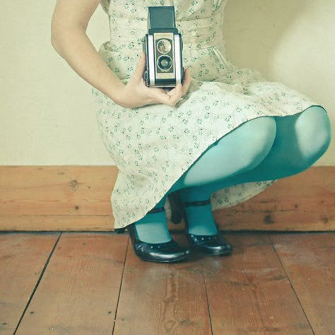

What is Twee?
The twee aesthetic embraces vintage inspiration, pastel colors, and a nostalgic charm. Characterized by its rejection of traditional masculine or overtly sexy fashion, twee style often features soft fabrics, delicate patterns like polka dots and florals, and accessories that appear handmade or intentionally quirky, such as bow headbands, knee-high socks, and miniature animal-themed items. Musicians like Zooey Deschanel and bands such as Belle and Sebastian became iconic representatives of the twee movement, embodying its gentle, slightly awkward, and unapologetically sentimental sensibility. Beyond fashion, the twee aesthetic extends into graphic design, interior decor, and a broader cultural approach that valorizes cuteness, vulnerability, and a deliberate rejection of cynicism in favor of an earnest, emotionally sincere worldview.
